Glaze Bubbles
Suspended micro-bubbles in ceramic glazes affect their transparency and depth. Sometimes they add to to aesthetics. Often not. What causes them and what to do to remove them.
Key phrases linking here: bubble-clouding, micro-bubbling, glaze bubbles, micro-bubbles, bubbling, clouding - Learn more
Details
As glazes melt, gases from the decomposition of organics, carbonates, sulphates and hydrates are generated (if the body was glazed green, or unbisqued, many more of these gases will be present). If glazes are already melting while the gases are being generated, bubbles form and are suspended in the glass melt.
For the least bubble clouding:
-Ware should be bisque-fired at the highest possible temperature (yet still be absorbent enough to glaze).
-If ware is being fired green, kilns should be soaked at the highest point possible before the glaze melts (on the way up).
-Glaze should begin melting at the highest possible temperature (because of the chemistry).
-Glaze should begin melting at the highest possible temperature (because materials sourcing the chemistry).
-Glaze ingredients should combine to have the lowest possible LOI.
-Oxide rather than carbonate colorants should be used.
-The body should generate minimal gases after the glaze has sealed.
-Glaze laydown should be as dense as possible.
-The glaze should be as thinly applied as possible.
-Glaze additives should burn out before it seals.
With increasing temperature, these bubbles will dissipate if:
-The final temperature glaze melt is fluid enough.
-The layer is thin enough.
-Surface tension of the melt is low enough to enable bubbles to merge into bigger ones that can surface.
-The kiln dwells for an adequate time when bubble surfacing occurs.
For colored, opaque and reactive glazes, less attention is necessary because the bubbles often cannot be seen. However, bubbles cloud transparents, making them appear unsightly, especially for darker colored bodies or when over underglaze colors. Strangely, at lower temperatures, it is often easier to get a crystal-clear glaze, even on red burning bodies.
Industry requires transparent glazes that can be fired quickly yet have good clarity, so considerable emphasis is placed on a bubble-free glass. Fritted glazes generate far fewer bubbles, although they can still come from the clay portion of the recipe (used for suspending the slurry), from binders, and from colored underglazes. Efforts are made to create a dense laydown to reduce air pockets in the dried glaze layer (these also produce bubbles). Highly processed bodies that use high-quality clays (low carbon) help produce a more perfect glass.
Glaze melts are not homogeneous (especially in the early stages of melting) and a beneficial side-effect of the bubbles is their mixing action. This produces a glass of less phase change (and therefore more even refraction). This is especially the case with mineral melts (e.g. Gerstley Borate).
Potters have an option many industrial users do not: Flexible firing schedules (e.g. drop-and-hold and slow-cool firing schedules).
It might seem that commercial brushing glazes for pottery should fire crystal-clear all the time, or at least better than anything you could make on your own. But this is not the case; they suffer the same problem. In their documentation and websites, manufacturers often refer to the tendency of their clear glazes to cloud if applied in too many coats (two coats are often recommended).
Related Information
Why so many bubbles in a fritted cone 6 glaze?
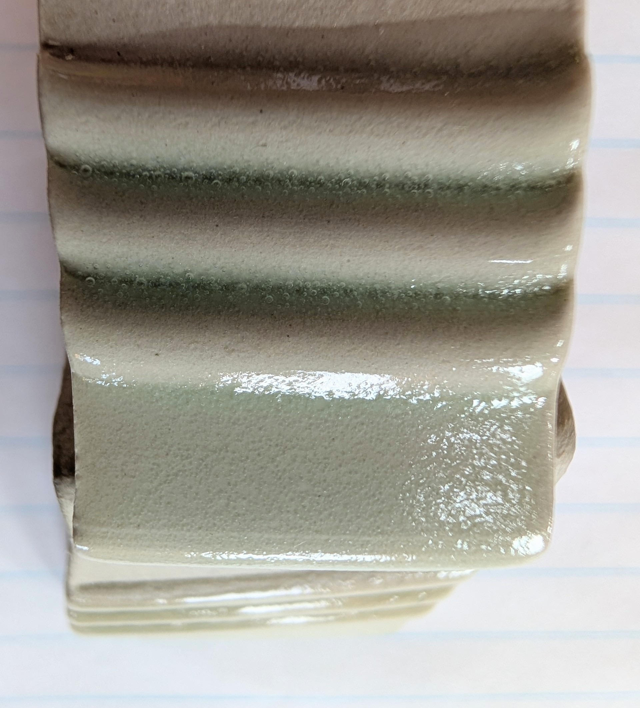
This picture has its own page with more detail, click here to see it.
This is a cone 6 transparent fritted glaze (converted from a Gerstley Borate one). Its B2O3 content is high, sourced by Ferro Frit 3134. Bubbles like this plague many potters, many just keep trying new glazes until one works, or give up on never finding one.
The first obvious problem is the frit, it starts melting at 1350°F, while plenty of gases are still being generated. Such a bubble-trapper is a non-starter in an industrial continuous fast-fire kiln. They need late melters. But potters have flexible firing, so what could be done? The firing could be slowed down, leading up to 1350. It could be held at top temp, then either slow cooled or a drop-and-hold.
And the recipe?
Notice the big bubbles; they started as little ones that merged. Given enough time, big ones break at the surface, but only under the right conditions: Low enough melt viscosity and surface tension. That's not happening. Strangely, old recipes sourcing high boron from Gerstley Borate had surprisingly few problems with bubbles! Why? GB was its own fining agent. And its boron entered the melt much later than this frit. Plus, the melt developed unevenly, creating localized channels and variable viscosity zones for easier bubble escape. The larger bubbles could better move laterally by combinations of surface tension, layer thickness and temperature gradients, and downward movement that created shear. A frit is missing all of that.
Let's assume this glaze melt has high surface tension. It pulls liquid inward around each bubble, stabilizing them round and making rupture more difficult. But, if surface tension drops, even slightly, bubbles deform more easily and adjacent ones merge. What could help? Industrial technicians have found that surprisingly small changes can really help with bubble release.
-A small SiO2 or Al2O3 addition can delay surface sealing or change viscosity timing.
-Sourcing the CaO from wollastonite can help bubble coalescence and reduce melt surface tension.
-Zinc oxide often changes surface behavior more than expected. As little as 2% can alter the viscosity curve, surface tension and melt interface properties, weakening bubble walls and improving near-surface rupture.
-Although MgO stiffens the melt somewhat, it also changes bubble wall elasticity; even small additions can help bubbles merge better.
As usual with solutions found here, methodical testing is needed to find the best answer.
Glaze bubbles on buff and red burning bodies at cone 6
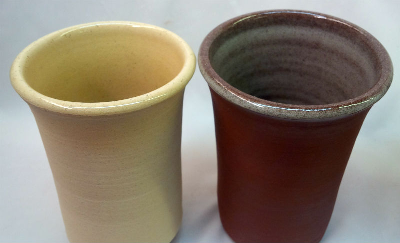
This picture has its own page with more detail, click here to see it.
These Plainsman Midstone and Redstone cups are fired to cone 6 with M340 Transparent glaze liner (these are raw materials that body manufacturers incorporate into their products in fairly high percentages). Notice how many more glaze bubbles there are with the red cup. This is typical using other transparent glazes also. To get a bubble-free clear on this red burning body a glaze having a higher melt fluidity, lower melt viscosity, later melting and a fining agent is needed. And we found two: GA6-B and G3806C.
A light bulb moment in solving bubble clouding:
The same black engobe with two transparent glazes.
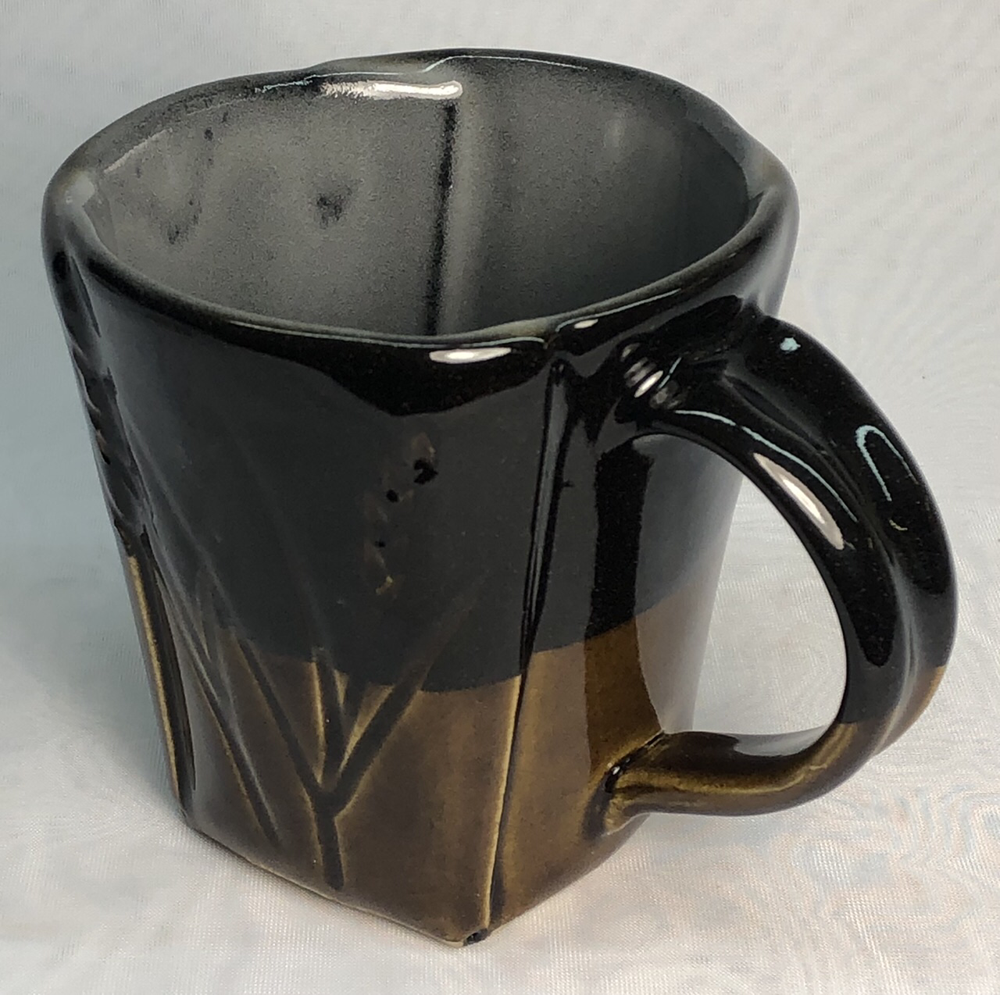
This picture has its own page with more detail, click here to see it.
This is a buff stoneware body, Plainsman M340. A L3954F black engobe was applied inside and upper-outside at leather hard. The piece was fired at cone 6 using the PLC6DS schedule. The inside, totally clouded glaze, is G2926B. Outside is GA6-B Alberta Slip amber transparent. This inside glaze is crystal-clear on other bodies (and on this one without the black engobe). The black stain in the engobe appears to be the issue. How?
Underglazes (or engobes) become a semi-dense layer and impede LOI by slowing gas diffusion. If the glaze then melts early and lacks viscosity, remaining channels of escape are sealed (increasing bubbling dramatically). Double-melt interfaces can form between vitreous engobes and glaze when the former softens, the clear glaze begins melting. Gases get trapped at the boundary, being generated at the exact wrong time during the firing.
Look at the outside amber transparent glaze, GA6-B. Although also early melting and on the same engobe, it has very little micro-bubble clouding! Why? It contains a lot of Alberta Slip, a material that is not finely ground like others. Particles across the range from 60-200 mesh are present; these are likely acting as a fining agent that enables bubble merging. The larger bubbles break at the surface because of sufficient melt mobility and lower melt surface tension.
Underglazes require a fluid melt transparent
But extra melt fluidity comes at a cost
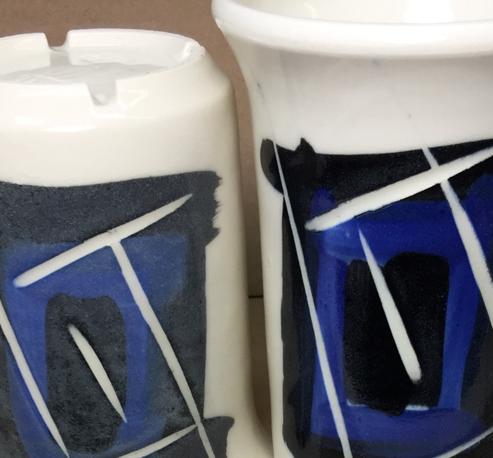
This picture has its own page with more detail, click here to see it.
These porcelain mugs were decorated with the same Amaco Velvet underglazes (applied at leather hard), then bisque fired, dipped in clear glaze and fired to cone 6 (using a drop-and-hold schedule). While the G2926B clear glaze (left, A) is a good glossy transparent for general use, its melt fluidity is not enough to clear the LOI micro-bubble clouds that dull the colors below (strangely, underglaze colors can generate them too). However, the G3806C recipe (right, B) has a more fluid melt, which is one factor that better enables bubble escape. Its melt also has a lower surface tension. An additional factor is thickness. A thinner layer of B would be even better (brushing glazes enable thin layering).
But B has downsides. Running is one, but not a factor here because we want it thin. Its high flux content also means it fires less durable. And, its high KNaO content raises the thermal expansion (COE) and thus the danger of crazing. Although it fits this porcelain, it crazes on others.
Four boron frits with vastly different melting:
Knowing about this could debubble your clear glaze.
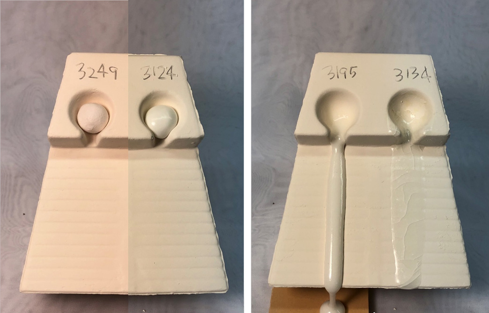
This picture has its own page with more detail, click here to see it.
Industry, late-melting glazes are a must for fast fire because there is no time for glazes to debubble. The later they melt (while still melting well at the target temperature), the more LOI gases of decomposition (generated by the body, glaze materials, glaze & body additives) can be expelled first. What about potters? These melt flow tests are of specific interest to anyone making clear glazes using frit 3134. They compare four common Ferro products fired to 1750F: Frit 3249 (29% B2O3), frit 3124 (14% B2O3), frit 3195 (23% B2O3) and frit 3134 (23% B2O3). Surprisingly, the one having the most B2O3 starts melting the latest (more than 200F after 3134), this is because of the amount of MgO in the formula. So, if your transparent glaze contains any MgO (G2926S, for example, contains 0.15 molar), the more that can be supplied using this (instead of 3134), the later the glaze will melt. Likewise, frit 3124 is a better choice than 3134 in cases where the percentage of clay can be reduced (since it supplies much more Al2O3). Glazes containing high percentages of feldspar are least likely to benefit because the main alternative source of KNaO is frit 3110, and it melts even sooner than 3134 (an exception is cases where the glaze also has high MgO and B2O3).
G2931F Ulexite-based transparent bubbles, G2931K frit-based version does not
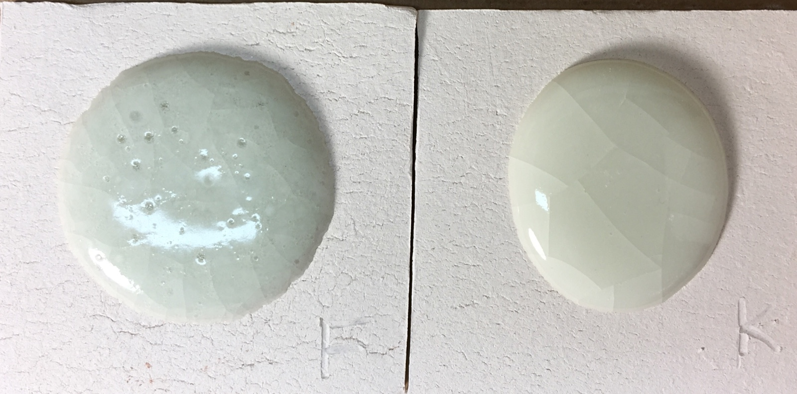
This picture has its own page with more detail, click here to see it.
I melted these two 9 gram GBMF test balls on tiles to compare their melting (the chemistry of these is identical, the recipes are different). The Ulexite in the G2931F (left) drives the LOI to more than 14%. That means the while the ulexite is decomposing during melting it is creating gases that are creating bubbles in the glass. Notice the size of the F is greater (because it is full of bubbles). While this seems like a serious problem, in practice the F fires crystal-clear on most ware.
Bubble city with Seattle Midnight body and G3806C glaze at cone 01, 4 and 5
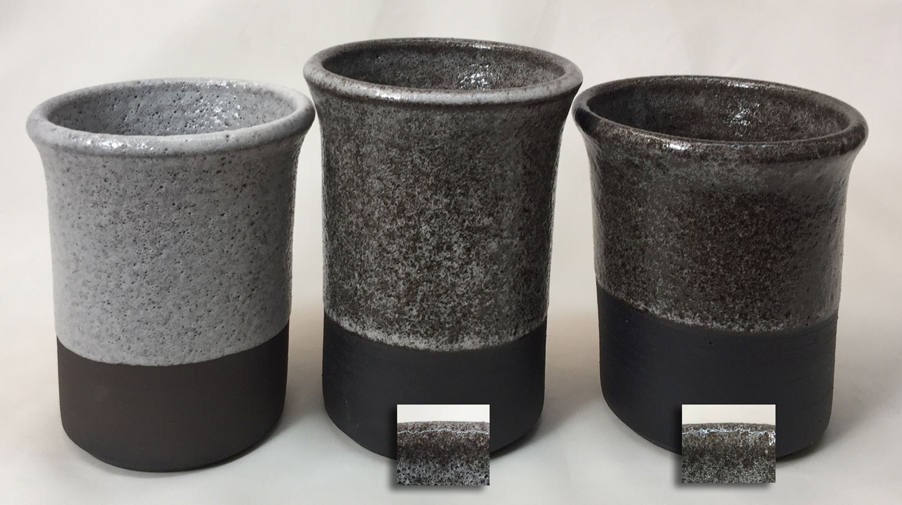
This picture has its own page with more detail, click here to see it.
This black body is made by Seattle Pottery Supply. Surfaces like this are obviously not functional, but for decorative ware? Yes! How does this happen? This body contains a material that is adding to its LOI (likely raw or burnt umber). Not just that, but the gases are being expelled at the wrong time. How is that? The glaze is fluid at cone 6 and begins melting way down around cone 04. It is melting long before the gases of decomposition from the body are finished being expelled. So they have to bubble up through the glaze, creating the effect you see here. This body is actually over-mature and brittle at cone 5, but at cone 01 its strength is fairly good.
Zircopax as a fining agent to de-bubble a stained glaze
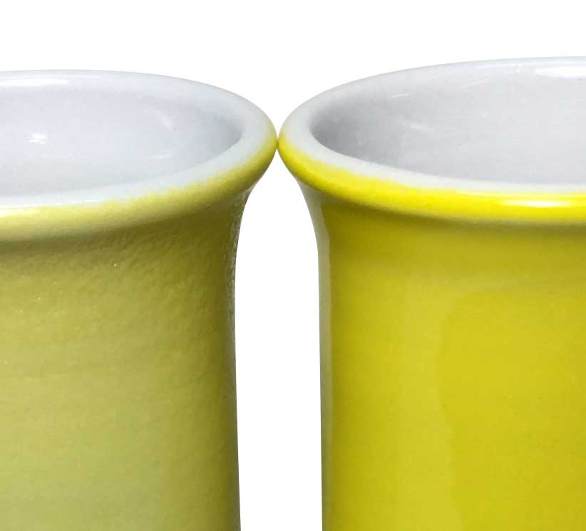
This picture has its own page with more detail, click here to see it.
The cone 03 porcelain cup on the left has 10% Cerdec encapsulated stain 239416 in the G2931K clear base (this is not an underglaze with a transparent over it). The surface is badly orange-peeled because the glass is full of micro-bubbles that developed during the firing. Notice that the insides of the cups are crystal-clear, no bubbles. So here, they are a direct product of the presence of the stain. The glaze on the right has even more stain, 15%. Why isn't it even worse? It also has a 3% addition of Zircopax (zircon), which acts as a fining agent. As you can see, this makes a dramatic difference. Suppliers of encapsulated stains even recommend a zircon addition, but are often unclear about why. This is the reason.
The yellow on the right could be improved further with a slow-cool or drop-and-hold firing. And if the glaze was reformulated to use a later melting frit (so fewer bubbles even get trapped).
Glaze with an encapsulated stain is bubbling. It needs Zircopax.
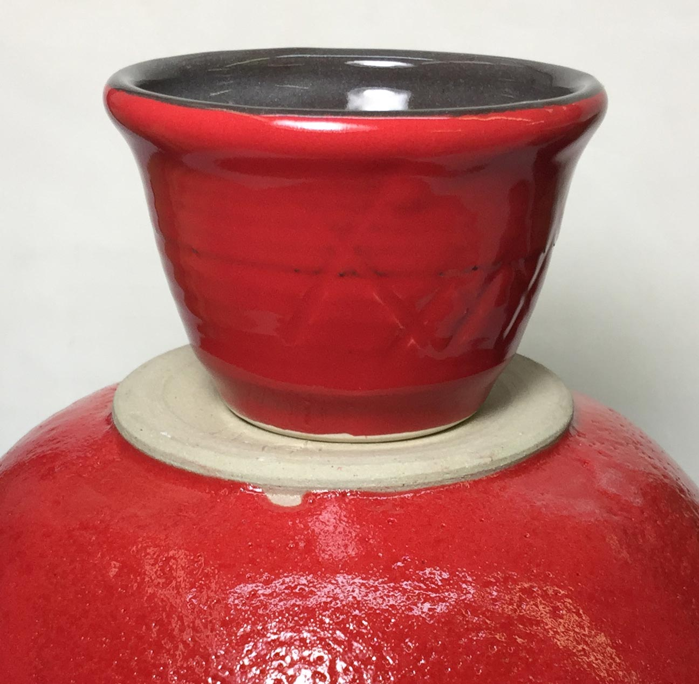
This picture has its own page with more detail, click here to see it.
These two pieces are fired at cone 6. The base transparent glaze is the same - G2926B Plainsman transparent. The amount of encapsulated red stain is the same (11% Mason 6021 Dark Red). But two things are different. Number 1: 2% Zircopax (zircon) has been added to the upper glaze. The stain manufacturers recommend this, saying that it makes for a brighter color. However, that is not what we see here. What we do see is the particles of unmelting zircon acting as seeds and collection points for the bubbles (the larger ones produced are escaping). Number 2: The firing schedule. The top one has been fired to approach cone 6 and 100F/hr, held for five minutes at 2200F (cone 6 as verified in our kiln by cones), dropped quickly to 2100F and held for 30 minutes.
LOI horse race with surprising winners
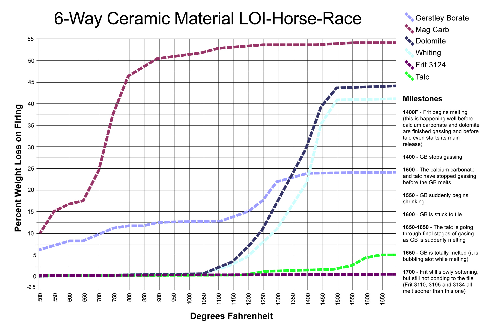
This picture has its own page with more detail, click here to see it.
This chart compares the decompositional off-gassing (% weight Loss on Ignition) behavior of six glaze materials as they are heated through the range 500-1700F. It is amazing how much weight some can lose on firing - for example, 100 grams of calcium carbonate generates 45 grams of CO2! This chart is a reminder that some late gassers overlap early melters. That is a problem. The LOI of these materials can affect glazes (causing bubbles, blisters, pinholes, crawling). Talc is an example: It is not finished gassing until 1650F, yet many fritted glazes have already begun melting by then. Even Gerstley Borate, a raw material, begins to melt while talc is barely finished gassing. Dolomite and calcium carbonate Other materials also create gases as they decompose during glaze melting (e.g. clays, carbonates, dioxides).
Calcium carbonate and glaze bubbles
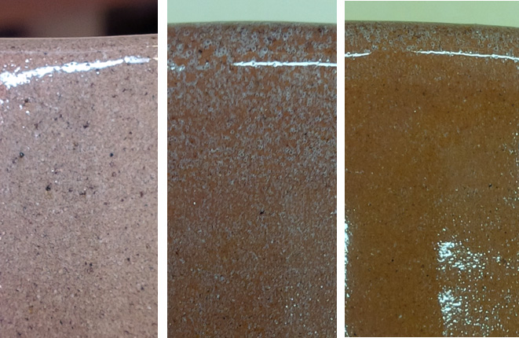
This picture has its own page with more detail, click here to see it.
The two cone 04 glazes on the right have the same chemistry but the center one sources it's CaO from 12% calcium carbonate and ulexite (the other from Gerstley Borate). The glaze on the far left? It is almost bubble free yet it has 27% calcium carbonate. Why? It is fired to cone 6. At lower temperatures carbonates and hydrates (in body and glaze) are more likely to form gas bubbles because that is where they are decomposing (into the oxides that stay around and build the glass and the ones that are escaping as a gas). By cone 6 the bubbles have had lots of time to clear.
Close-up of cone 10R celadon bubbles suspended in the glass
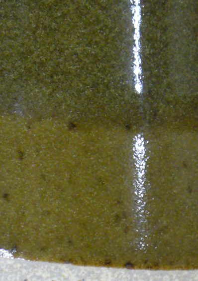
This picture has its own page with more detail, click here to see it.
This is happening because this glaze lacks flux and is not fluid enough to enable their migration. In the upper half they are more evident (double thickness).
A body containing manganese bubbles the glaze
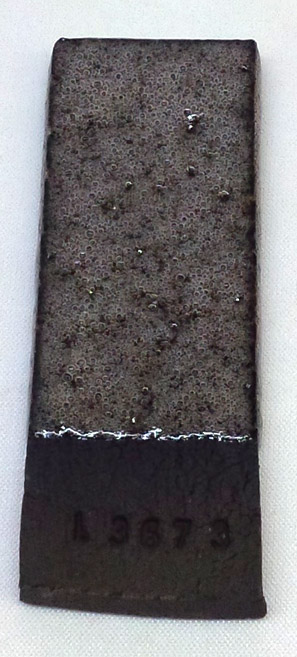
This picture has its own page with more detail, click here to see it.
Laguna Barnard Slip substitute fired at cone 03 with a Ferro Frit 3195 clear glaze. The very high bubble content is likely because they are adding manganese dioxide to match the MnO in the chemistry of Barnard (it gases alot during firing).
Is clear glazing a dark burning oxidation stoneware a good idea? Likely not.
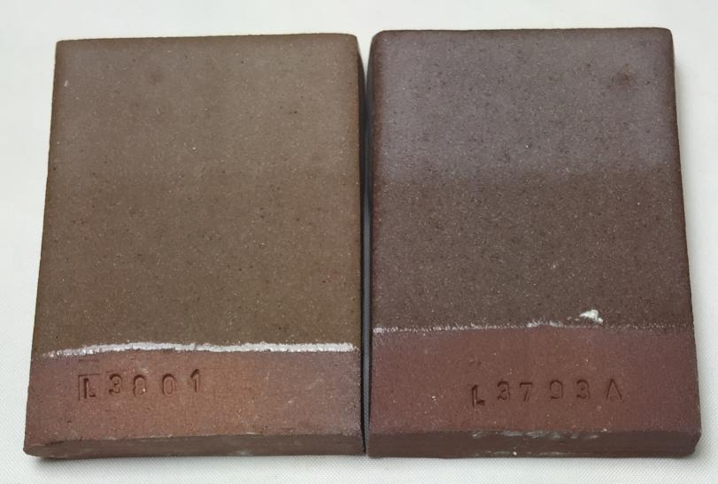
This picture has its own page with more detail, click here to see it.
Dark bodies tend to have more carbon impurities and the burnout of these can generate gases that create bubbles in the glaze. Because of the dark background, the bubbles impart a muddy look. The body on the left is a finer particle size, so the lower thinner glazed section is a partial success, but the upper section is bubbling. The body on the right, although a more pleasant red color, is bubbling worse. Notice also that the warm color of the body is at least largely lost under the glaze. At its worst pinholes can appear.
Perfect storm to create massive bubbling in a low fire kiln

This picture has its own page with more detail, click here to see it.
The clay is terra cotta. It is volatile between 04 and 02, becoming dramatically more dense and darker colored. The electronic controller was set for cone 03, but it has fired flat (right-most cone), that means the kiln went to 02 or higher. At 02 the body has around 1% porosity, pushing into the range where the terra cotta begins to decompose (which means lots of gas expulsion). The outsides of some pieces blistered badly while the insides were perfect (because they got the extra radiant heat). The firing was slow, seven hours. Too long, better to make sure ware is dry and fire fast. Another problem: The potter was in a rush and the pieces were not dry. These factors taken together spelled disaster.
2% iron oxide in a glossy terra cotta glaze gives better color, less clouding
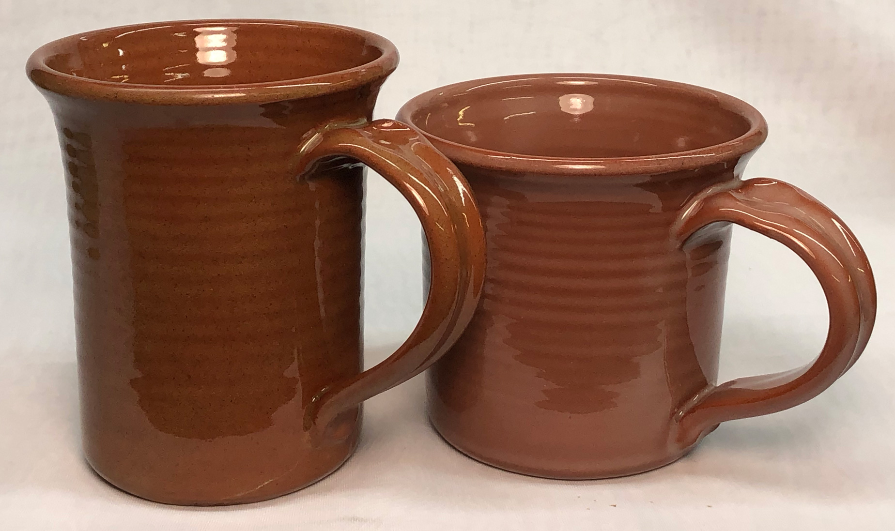
This picture has its own page with more detail, click here to see it.
Both pieces are the same clay body, Plansman L215. Both are fired to cone 03. Both are glazed using G1916Q borosilicate recipe. The glaze on the piece on the left has 2% added iron oxide (sieved to 80 mesh). Each particle or agglomerate of iron (which is refractory in this situation) acts to congregate the micro-bubbles so they can better exit the glaze layer. Notice also how much richer the color is as a result. The piece on the right, without the added iron oxide, is neither as red nor as transparent. Of course, I had to be careful not to apply the glaze too thickly on both.
Micro bubbles in low fire glaze. Why?
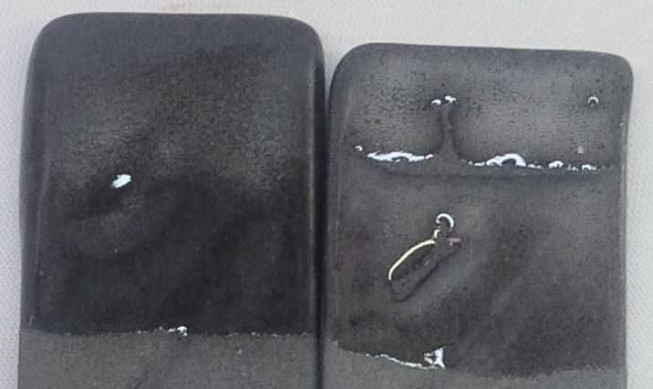
This picture has its own page with more detail, click here to see it.
Left: G1916Q transparent fired at cone 03 over a black engobe (L3685T plus stain) and a kaolin-based low fire stoneware (L3685T). The micro-bubbles are proliferating when the glaze is too thick. Right: A commercial low fire transparent (two coats lower and 3 coats upper). A crystal clear glaze result is needed and it appears that the body is generating gases that cause this problem. Likely the kaolin is the guilty material, the recipe contains almost 50%. Kaolin has a 12% LOI. To cut this LOI it will be necessary to replace some or all of the kaolin with a low carbon ball clay. This will mean a loss in whiteness. Another solution would be diluting the kaolin with feldspar and adding more bentonite to make up for lost plasticity.
Why is this transparent so full of bubbles?

This picture has its own page with more detail, click here to see it.
An example of how a micro-bubble population in the matrix of a transparent glaze can partially opacify it. If this glaze was completely transparent, the red clay body would show much better. However this is not the fault of the glaze. On a white body it would be more transparent. The problem is the terra cotta body. This is fired at cone 02. As the body approaches vitrification the decomposition of particles within it generate gases that bubble up in to the glaze. A positive aspect of this phenomena that this glaze could be opacified using a lower percentage of zircon.
This type of glaze responds better to opacifier additions.
Example of how bubbles dissipate in a glaze with increasing temperature
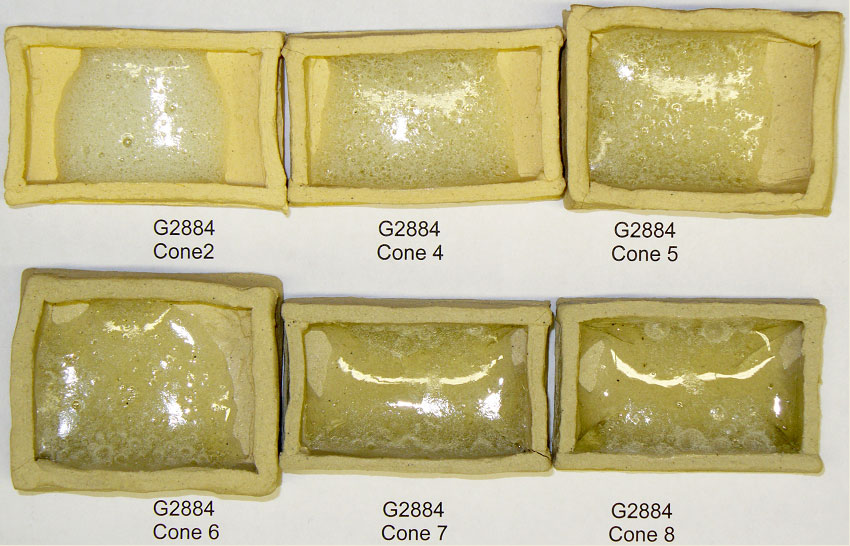
This picture has its own page with more detail, click here to see it.
This is a Gerstley Borate based recipe (45%) melted in crucibles at increasing temperatures. Although the recipe is well melted at cone 2, it is still not fluid enough to enable their migration in the time available. By contrast, the melt at the upper temperature is much less viscous, enabling all bubbles to completely clear on the thinner sections. If this glaze were applied to ware it would be in a thin layer and the bubbles would likely clear at cone 6. Not to be ignored is the degree to which the thousands of bubbles passing upward through the melt have helped to mix the melt and remove discontinuities in the cone 7 and 8 specimens.
What material makes the tiny bubbles? The big bubbles?
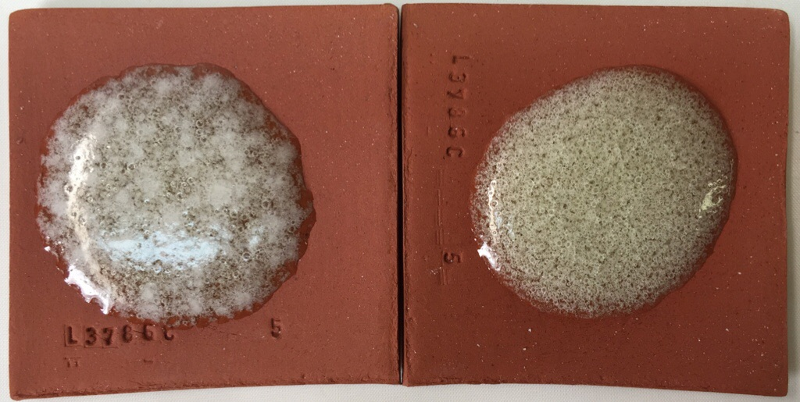
This picture has its own page with more detail, click here to see it.
These are two 10 gram GBMF test balls of Worthington Clear glaze fired at cone 03 on terra cotta tiles (55 Gerstley Borate, 30 kaolin, 20 silica). On the left it contains raw kaolin, on the right calcined kaolin. The clouds of finer bubbles (on the left) are gone from the glaze on the right. That means the kaolin is generating them and the Gerstley Borate the larger bubbles. These are a bane of the terra cotta process. One secret of getting more transparent glazes is to fire to temperature and soak only long enough to even out the temperature, then drop 100F and soak there (I hold it half an hour).
Glaze bubbles behaving badly!
We see it in a melt fluidity test.

This picture has its own page with more detail, click here to see it.
These melted-down-ten-gram GBMF test balls of glaze demonstrate the different ways in which tiny bubbles disrupt transparent glazes. These bubbles are generated during firing as particles in the body and glaze decompose. This test is a good way to compare bubble sizes and populations, they are a product of melt viscosity and surface tension. The glaze on the top left is the clearest but has the largest bubbles, these are the type that are most likely to leave surface defects (you can see dimples). At the same time its lack of micro-bubbles will make it the most transparent in thinner layers. The one on the bottom right has so many tiny bubbles that it has turned white. Even though it is not flowing as much it will have less surface defects. The one on the top right has both large bubbles and tinier ones but no clouds of micro-bubbles.
Cone 6 glazes can seal the surface surprisingly early - melt flow balls reveal it
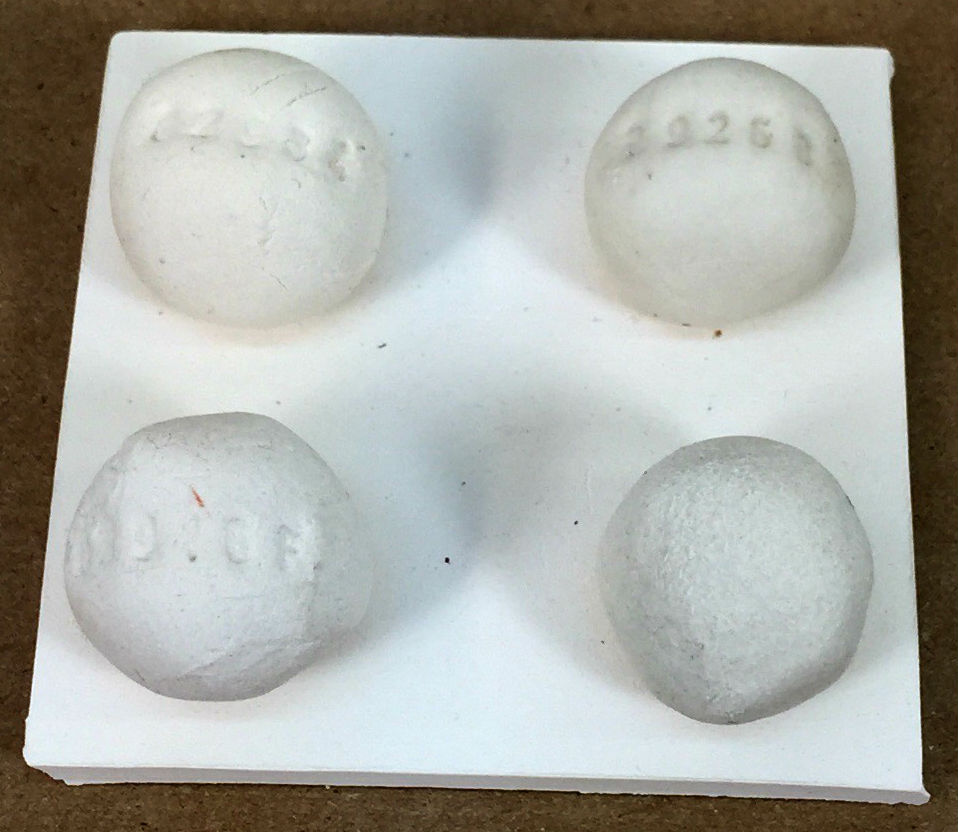
This picture has its own page with more detail, click here to see it.
These are 10 gram balls of four different common cone 6 clear glazes fired to 1800F (bisque temperature). How dense are they? I measured the porosity (by weighing, soaking, weighing again): G2934 cone 6 matte - 21%. G2926B cone 6 glossy - 0%. G2916F cone 6 glossy - 8%. G1215U cone 6 low expansion glossy - 2%. The implications: G2926B is already sealing the surface at 1800F. If the gases of decomposing organics in the body have not been fully expelled, how are they going to get through it? Pressure will build and as soon as the glaze is fluid enough, they will enter it en masse. Or, they will concentrate at discontinuities and defects in the surface and create pinholes and blisters. Clearly, ware needs to be bisque fired higher than 1800F.
Has a cone 5 bisque released Pandora particles?
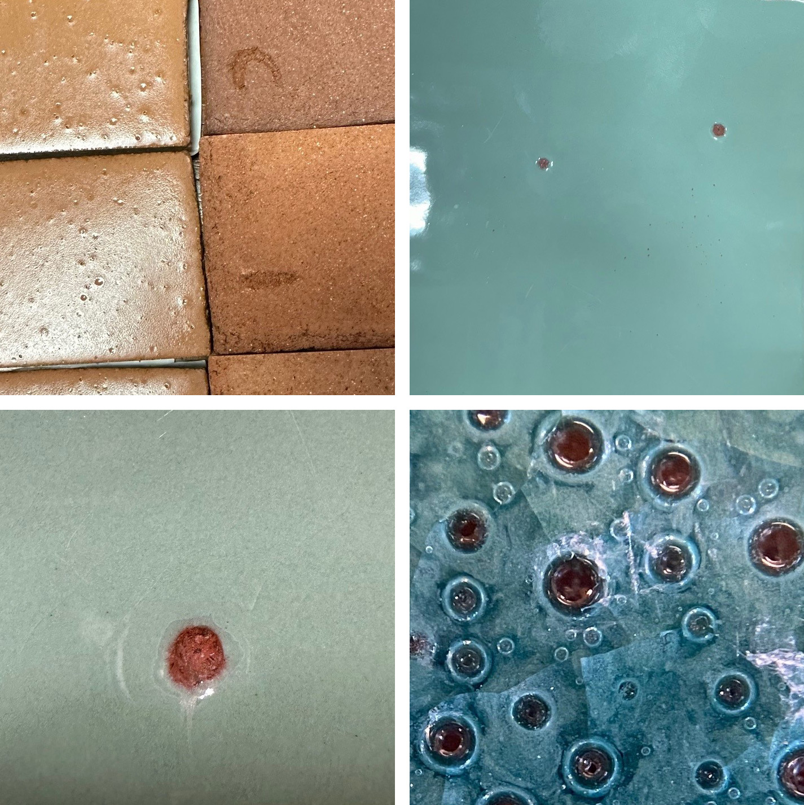
This picture has its own page with more detail, click here to see it.
An art tile company is bisque firing a heavily grogged red stoneware body to cone 5 and then finishing with a range of low temperature boron glazes. But these glaze bubble and blister defects are happening! There appears to be some sort of LOI gas-monster particles present. They could be in the grog. And, the body contains two dark burning fireclays, both could contain also rogue particles. To identify them a sieve could be used to pull out the larger ones (e.g. 35 or 42 mesh) and these could be spread in a thin layer onto a porcelain tile and fired to cone 5. Taking closeup photos before and after should spot the guilty ones, they will have a visibly different form (e.g. melting, puffing up, altered color). These pandora particles seem to be activated at cone 5 and capable of continuing to gas even at low refire.
What does it take to get a crystal-clear low fire transparent? A lot!
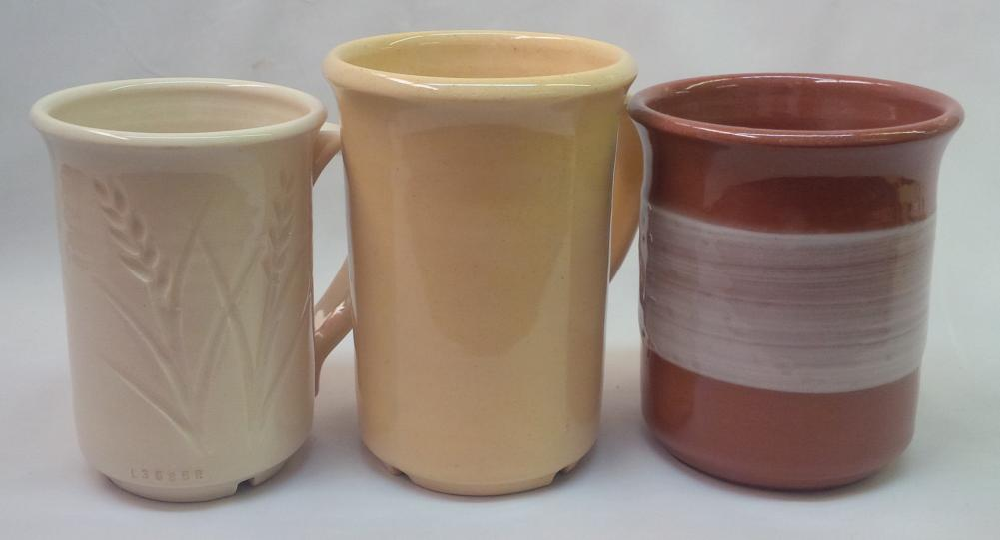
This picture has its own page with more detail, click here to see it.
These three cups are glazed with G1916S at cone 03. The glaze is the most crystal clear achieved so far because it contains almost no gas producing materials (not even raw kaolin). It contains Ferro frits 3195 and 3110 plus 11 calcined kaolin and 3 VeeGum. Left is a low fire stoneware (L3685T), center is Plainsman L212 and right a vitreous terra cotta (L3724F). It is almost crystal clear, it has few bubbles compared to the kaolin-suspended version. These all survived a 300F/icewater IWCT test without crazing!
An ultra-clear brilliantly-glossy cone 6 clear base glaze? Yes!
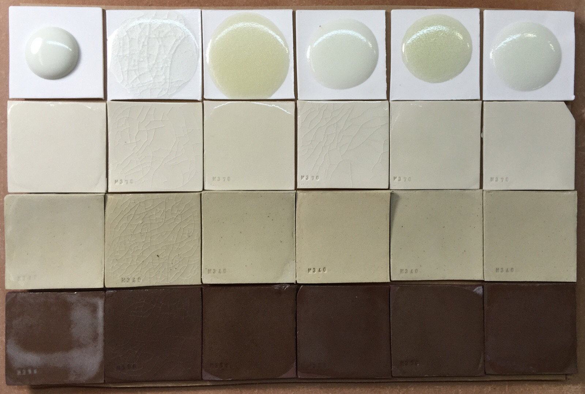
This picture has its own page with more detail, click here to see it.
I am comparing 6 well known cone 6 fluid melt base glazes and have found some surprising things. The top row are 10 gram GBMF test balls of each melted down onto a tile to demonstrate melt fluidity and bubble populations. Second, third, fourth rows show them on porcelain, buff, brown stonewares. The first column is a typical cone 6 boron-fluxed clear. The others add strontium, lithium and zinc or super-size the boron. They have more glassy smooth surfaces, less bubbles and would should give brilliant colors and reactive visual effects. The cost? They settle, crack, dust, gel, run during firing, craze or risk leaching. Out of this work came the G3806E and G3806F.
Glaze melt fluidity comparison:
Same chemistries, different recipes
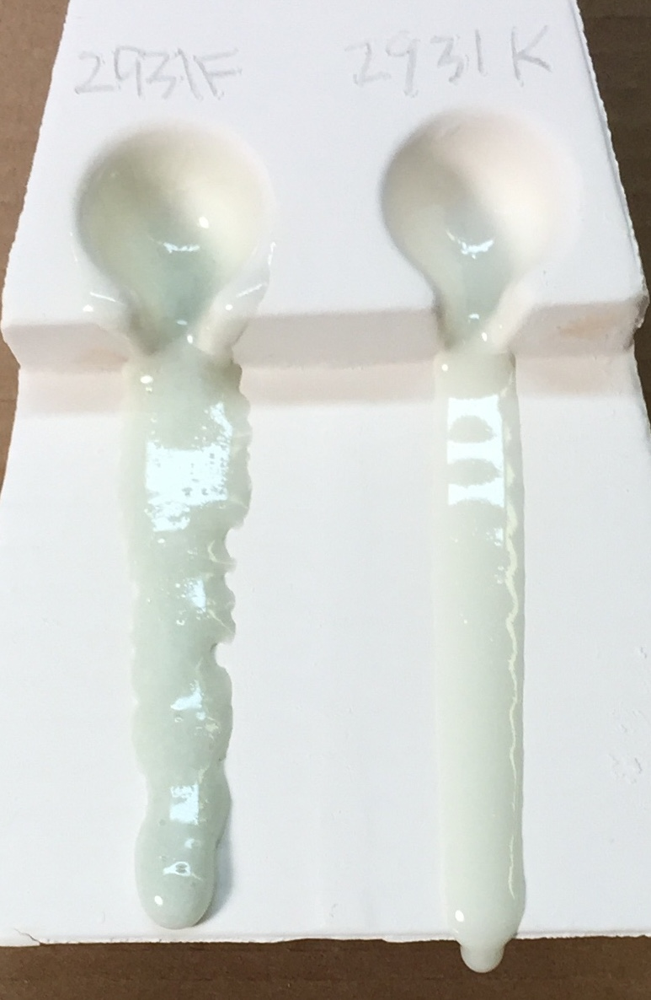
This picture has its own page with more detail, click here to see it.
At low temperatures, potters want transparents with good clarity to support brilliant colors. Especially on terra cotta bodies. A melt flow test like this enables a comparison one cannot do on using glazed test tiles.
These are two low temperature glazes I use at cone 03, G2931F and G2931K. They have the same chemistry. But F gets its boron from Ulexite, a material with a high LOI (notice how the escaping gases have disrupted the downward flow). The frit-sourced boron version on the right flows cleanly and contains almost no obvious bubbles.
So obviously, one would use the K, right? Not exactly. I used the K version successfully on many pieces. In a thin layer, the ulexite seems to act as its own fining agent, like Gerstley Borate, and the bubbles do merge clear well enough.
Adding iron to a clear glaze has cleared the micro-bubbles!
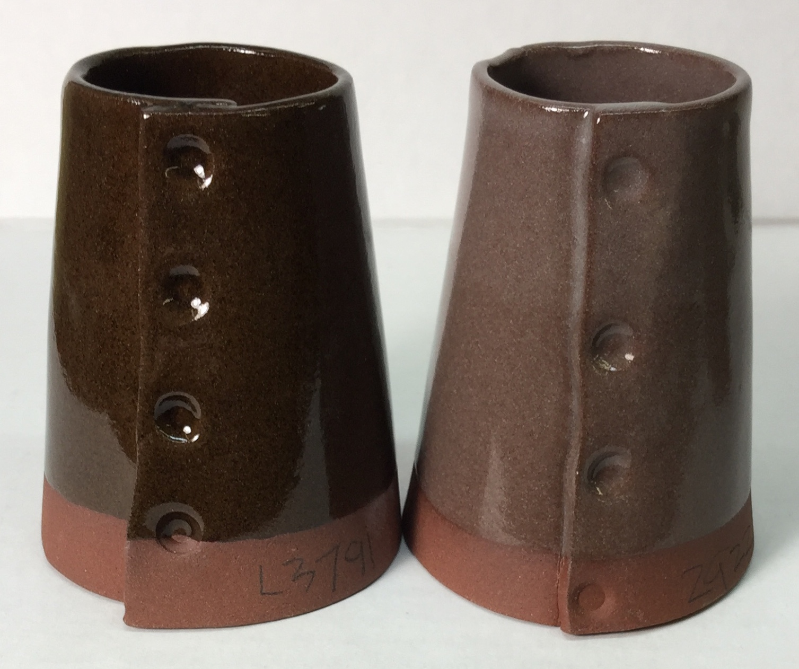
This picture has its own page with more detail, click here to see it.
The glaze on the right is a transparent, G2926B, on a dark burning cone 6 body (Plainsman M390). On the left is the same glaze, but with 4% red iron oxide added. The entrained microbubbles are gone and the color is deep and much richer. It is not clear how this happens, but it is some sort of "fining" and is certainly beneficial. In other circumstances, we have seen big benefits with only 2% iron added.
Inbound Photo Links
|
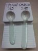 Comparing two brands of calcium carbonate |
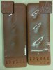 Bubbles in Terra Cotta transparent glazes. What to do? |
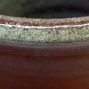 Red burning clays bubble glazes more |
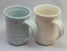 Reduction and oxidation porcelains |
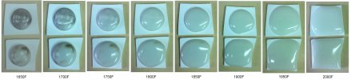 Melting glaze balls at various temperatures to see when all carbon has been expelled |
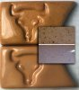 Iron oxide as a fining agent to debubble a low fire transparent |
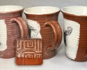 Clouding varies with these cone 04 terra cotta glaze recipes |
Links
| Glossary |
Carbon trap glazes
A type of ceramc glaze. |
| Glossary |
LOI
Loss on Ignition is a number that appears on the data sheets of ceramic materials. It refers to the amount of weight the material loses as it decomposes to release water vapor and various gases during firing. |
| Glossary |
Glaze Blisters
Blistering is a common surface defect that occurs with ceramic glazes. The problem emerges from the kiln and can occur erratically in production. And be difficult to solve. |
| Glossary |
Surface Tension
In ceramics, surface tension is discussed in two contexts: The glaze melt and the glaze suspension. In both, the quality of the glaze surface is impacted. |
| Glossary |
Transparent Glazes
Every glossy ceramic glaze is actually a base transparent with added opacifiers and colorants. So understand how to make a good transparent, then build other glazes on it. |
| Glossary |
Drop-and-Soak Firing
A kiln firing schedule where temperature is eased to the top, then dropped quickly and held at a temperature 100-200F lower. |
| Glossary |
Ceramic Glaze Defects
Ceramic glaze defects include things like pinholes, blisters, crazing, shivering, leaching, crawling, cutlery marking, clouding and color problems. |
| Glossary |
Fining Agent
Individual tiny bubbles in a glaze melt can coalesce around the undissolved particles of a fining agent, the growing bubble swallowing others around it and finally exiting at the surface. |
| Tests |
Glaze Melt Fluidity - Ball Test
A test where a 10-gram ball of dried glaze is fired on a porcelain tile to study its melt flow, surface character, bubble retention and surface tension. |
| Firing Schedules |
Cone 6 Drop-and-Soak Firing Schedule
350F/hr to 2100F, 108/hr to 2200, hold 10 minutes, freefall to 2100, hold 30 minutes, free fall |
 PayPal | No tracking, No ads, No paywall, No transient content! Just organized, concise information constantly updated and improved. Was this helpful? Consider supporting me. |
| By Tony Hansen Follow me on        |  |
Got a Question?
Buy me a coffee and we can talk 

https://digitalfire.com, All Rights Reserved
Privacy Policy